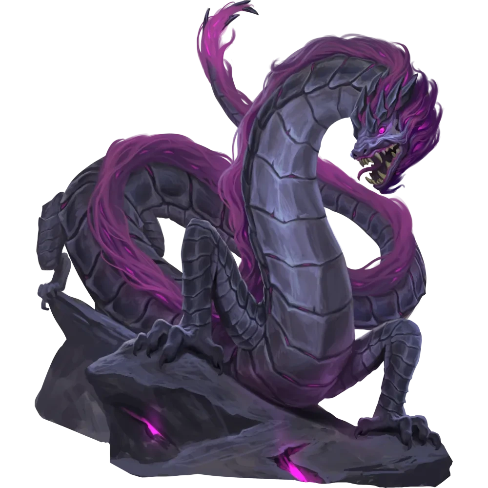

各年龄段数据卡
即便以巨龙的标准来衡量，冥界龙也是出了名的囤积狂；因此在凡人眼中，他们的巢穴无不堆满奇珍异宝、金碧辉煌。尽管冥界龙本身是火元素的化身，他们却对大地孕育的丰饶宝藏怀有深切赞叹，热衷于搜罗各式各样的矿石与宝石来填满自己的地下家园。这些藏品不仅是供他们赏玩品鉴的博物馆珍品，还能在紧要关头充当应急试剂――因为冥界龙同时也是狂热的炼金术士，时常在与世隔绝的地下居所中开展各种稀奇古怪的实验；至于实验引发的附带破坏，通常也只会被遥远地表之上的凡人记录为某种古怪的地壳异动。 不了解巨龙本性之人有时会单凭冥界龙的名字、居所位置与宝库构成，误以为他们的所属元素是土或自然；然而只要亲眼见过冥界龙真容，就绝不可能再生出这般误会――他们的鳞片、毛发乃至双眸无不闪耀着内在烈焰的光芒，连周遭空气都会因酷烈高温而扭曲荡漾。 冥界龙巢穴冥界龙在地底深处的洞窟中筑巢，且常常选址于地壳构造运动剧烈的活跃地带，以便就地采集炼金实验所需的各类资源。正因如此――同时也为了将觊觎其海量宝石与矿石藏品的入侵者拒之门外――冥界龙会将巢穴建造得坚不可摧，哪怕遭遇强烈地震或是狂暴巨兽正面撞击巢穴岩壁也能安然无恙。与此同时，那些企图潜行渗透而非强行破门的不速之客也会发现，冥界龙布置的防盗安保同样堪称顶尖水准。 太古冥界龙太古冥界龙位列世间最伟大的炼金术士之林，他们将自身魔法与科学研究融会贯通，创造出科学与秘法交织的种种奇迹。在将冥界龙洞悉魔法催化剂与炼金试剂相互作用的天赋锤炼至炉火纯青之余，太古冥界龙还深刻参透了地底深处构造板块如何随魔网地脉（或称“龙脉”）中的秘法能量奔涌流转，并由此孕育出赋予冥界龙元素威能的磅礴高压与炽烈地热。 几乎所有冥界龙都酷爱搜集形形色色的宝石与矿物，而太古冥界龙更坐拥世界级的顶尖馆藏，其中不乏稀世罕见乃至举世孤品的珍稀标本――平日里可作陈列展品静静鉴赏，紧要关头又能化作威力无穷的炼金试剂。只要一条巨龙将母星上存在的每一种矿物（乃至自天外陨落或自其他位面携来的异界矿石）都各备上一小份，那么无论何时想要验证某项理论或开展某场实验，他都能在自家库房里信手拈来所需的一切材料。 冥界龙宝库哪怕连我也不得不承认，冥界龙的宝库在整个龙族之中都算得上最璀璨夺目的典范之一。当你脑海中浮现出那种典型的巨龙宝库画面――成堆的金币、宝石、珠宝琳琅满目，外加几乎堪比整座博物馆的历史文物、艺术珍品与魔法物品，统统严密看守在地下金库之中――冥界龙的宝库便将这一印象演绎到了极致。事实上，尽管我本人是一条绿龙，但在我关于永光龙的首部重要著作中阐述“力量宝库”（即在布置博物馆式宝库时运用风水地脉学，借由藏品陈列的协同格局来增幅巨龙自身天赋力量的技艺）这一概念时，之所以专门选用了一幅冥界龙宝库的插图，绝非毫无缘由。 正因如此，时不时便会有人登门拜访太古冥界龙，希望能交易到某种他们猜想巨龙定然储藏在实验室巢穴某处的极度稀有矿物。当然，若非拿出真正等值的珍宝或功绩作为等价交换，太古冥界龙往往绝不肯轻易割舍自己馆藏中的得意珍品。谈判破裂之后，总有些不知死活的凡人蠢货妄图屠龙夺宝；不过那种情况下，他们身上的财物也只会化作替太古冥界龙装点巢穴的额外横财，所以巨龙到头来倒也并不怎么介意。一座富丽堂皇的宝库是任何冥界龙引以为傲的重要资本，对太古龙而言更是如此；倘若哪条太古冥界龙的宝库寒酸乏味，甚至可能得不到其他冥界龙对太古龙应有的敬重。当然，这类尴尬局面往往很快就会迎刃而解――受辱的太古龙会当场向胆敢出言羞辱自己的后辈发起挑战，并在毫无悬念地获胜之后洗劫败者的宝库，将其并入自己的收藏之中。 若将炼金术史上诸多最伟大的突破与发现追本溯源，便会惊讶地发现其中相当一部分都直接出自某条太古冥界龙的手笔，或是源于其他血统的学者在引用其著作与研究基础上取得的后续成果。据说就连炼金火与火药之类的重大发明，最初也同样源自这些强横而才华横溢的龙族研究者。 太古冥界龙体内烈焰散发的柔和紫芒，令他们周遭的空气都在不断扭曲翻涌；而任何胆敢进犯这位伟岸巨龙的狂徒更会发现，那道紫芒将在瞬间骤然炽盛，化作炽焰谴罚严惩他们的冒犯之罪。 元素炼金组合有时，太古冥界龙会尝试在炼金术中融合多种元素之力，将他们最钟爱的火元素与其他传统皇权龙所代表的土、金、水、木四行结合运用： 火与土：将火与土两种元素运用于炼金术的冥界龙，极大推动了砖石与陶瓷烧制技艺的发展，其中包括强度惊人的特种陶瓷与超高温陶瓷。 火与金：将火与金两种元素运用于炼金术的冥界龙，研发出了高超的冶金技术，能够熔铸出由多种金属构成的独特合金。 火与水：将火与水两种元素运用于炼金术的冥界龙，革新创造出了纯粹依靠蒸汽及其压力驱动的精巧装置。 火与木：将火与木两种元素运用于炼金术的冥界龙，烧制出了多种专为特殊用途打造的优质木炭。 收藏家塔拉维努雷克斯在地底极深处、两块构造板块交汇碰撞的边缘地带，一处强力的魔网地脉节点正奔涌着澎湃的潜在能量。而坐落在这处节点之上的，便是一座戒备森严的实验室巢穴，其中坐拥着举世罕见的庞大金库，收藏了数之不尽的宝石、矿物、炼金试剂与魔法物品。这座巢穴的主人，正是以古怪脾性闻名的太古冥界龙――“收藏家”塔拉维努雷克斯。 塔拉维努雷克斯在巨龙之中颇为另类：相比堆成小山的金币，她对同一种物品持有超过一件几乎毫无兴趣。当然，她心里清楚炼金实验或对外交易时或许需要备用耗材，因此也会留存些许备份，但这绝非她的重心所在。她会将每一类珍宝或材料中最完美无瑕的绝品陈列在一套条理分明的严密体系之中，宛如一座收纳了数百万件独立奇珍的恢弘博物馆。 魔网地脉节点的磅礴魔力不仅让塔拉维努雷克斯得以开展在别处根本无从实现的世界级炼金实验，还为她独创的防护结界与防御体系源源不断地注入能量――据传那也是全世界最滴水不漏的安保系统之一。尽管在寻访并获取尚未入库的新藏品时，塔拉维努雷克斯颇为享受追猎寻宝的刺激快感，但一旦现有馆藏失窃哪怕一件，都会让她陷入杀意沸腾的暴怒心境；因此她干脆凭借匪夷所思的严密防范，从源头上杜绝一切失窃可能。有人甚至说，哪怕是次级神明想要从塔拉维努雷克斯手中偷走东西也得大伤脑筋。 毁灭博士沃拉斯作者：Leslie Simmons 尽管许多冥界龙都热衷于将魔法与炼金术相结合，但其中有一位却因实验造成的附带破坏实在太过惨烈，以至于让自己的名字化作了传奇――那便是人称“毁灭博士”（某些执着于他巨龙血统的人有时也称他为“毁灭之龙”）的太古龙沃拉斯。要知道，巨龙毁灭整座聚落本就是司空见惯之事，能在龙族之中挣得这样一个名号绝非易事；而沃拉斯之所以特殊，在于他酿成的一切灾祸皆是以科学研究之名义。为了推进魔法与炼金术的前沿研究，他总是热衷于尝试那些其他巨龙与学者绝不敢染指的诡异边缘实验。这些实验固然有可能带来颠覆性的革命成果，却也同样可能蹂躏整片地域、造出怪诞的炼金生物，或是引发失控的魔法异象――而且灾祸发生的频率远比辉煌成功要高得多。沃拉斯对此毫不在意：事实上，他反而颇为享受在近处或远方一边观察人们在实验余波中苦苦挣扎，一边冷静记录观测数据的乐趣。他经常发表专著论文，详尽阐述自己各项实验的方法论与实验结果，其中也确实不乏真正极具实用价值的成果――当然，其他学者在使用这些建立在惨重灾祸之上的研究成果时，往往会陷入深刻的道德困境。沃拉斯酷爱收集诅咒物品，并常将其投入实验之中。他曾因一场对“黄鼠狼袋”进行超限充能的实验，导致整座定居点被迫废弃，如今那里只剩下了漫山遍野的黄鼠狼。作为一名独行客，沃拉斯唯一的同伴便是炼金构装体。他没有固定的单一巢穴――因为过去他已经接连炸毁了好几座自家巢穴――所以总是四处迁徙，不断寻觅适合开展下一场新实验的绝佳场地。 对于一心只想让自家藏品安安静静不受打扰的这位太古龙而言，不幸的是，这份赫赫威名在数百年间反而激起了无数怪盗的挑战欲――那些为了追求刺激、挑战极限，或是渴望凭完成不可能之壮举而名扬天下的传奇大盗，纷纷企图突破她的防线、从她手中盗宝。传说中曾有一两起得手的案例，声称某位举世闻名的大盗设法从金库外围浅层顺走了一件微不足道的小物件；但这些故事多半真伪难辨，塔拉维努雷克斯本人也从不承认有过任何失手。一些龙族历史学家认为，那些窃贼带走的或许只是价值足以令其自以为得手的诱饵赝品――那是“收藏家”特意留在第一层防线中的迷魂阵，旨在打消当代最顶尖飞贼与潜入大师继续深入内部、染指她真正核心馆藏的念头。 焦香入味冥界龙往往偏爱将食物炙烤到令许多其他生灵觉得焦糊难咽的程度，而且其中不少还是重辣美食的拥趸。反过来，冰淇淋之类的冰冻食物会让他们觉得冻得生疼，比起汤水淋漓的菜肴，他们也远为偏爱干爽耐嚼的吃食。诚然，一次性摄入足量高水分食物确实会压制火元素的力量，但他们必须一口气喝下数加仑的水才会彻底熄灭体内烈焰；不过，这并不意味着摄入未达该阈值的大量水分就是什么舒坦的体验，只要条件允许，冥界龙总是尽可能对此敬而远之。 每隔一段时间，塔拉维努雷克斯便会公布一项真正具有开创意义的炼金学重大发现，但她产出成果的频率远不及与她同时代的多产实验狂――比如“毁灭博士”沃拉斯那样的太古龙同行。这一方面是因为她的主要精力放在搜罗世间孤品而非反复实验上，但最主要的原因还是在于她绝不舍得耗尽任何一种试剂中最完美的那份标本，唯恐令自己的馆藏出现缺憾。 在极罕见的情况下，有人能够博得塔拉维努雷克斯的青睐，从而获准由她亲自引领参观整座博物馆金库。若是她信不过的人，她绝不会容许对方踏入半步；而即便面对受她信任的宾客，她也必定会要求对方卸下全身所有随身物品，换上一套由她提前备好的特制服饰――她口头上解释说这套衣服经过净除处理，以免外人污染藏品；实际上，衣料中还织入了精妙法术，能够封堵五花八门的潜在盗窃手段。毕竟哪怕信得过对方，也犯不着疏忽安全防范。有了特制魔法衣袍、重重防护结界，再加上塔拉维努雷克斯本人全程寸步不离的警觉注视，她大可笃定宾客绝无趁机行窃的可能。当然，以防万一，她只会邀请那些被她摸清了住处与软肋牵挂的人前来做客――如此一来，万一对方当真神通广大地在她眼皮底下耍了花招，她也能立刻扣下对方珍视之物充作人质，逼其乖乖交还失窃的珍宝。 魔网地脉，抑或“龙脉”魔网地脉纵横交错地遍布整颗星球，在脉络间奔涌输送着魔法能量。在龙族之中，许多巨龙更偏爱将其称为“龙线”或“龙脉”――这两者也都是冥界龙最推崇的称呼。考虑到冥界龙在风水地脉学（一门研究魔网地脉与“地势魔法”的学问）上的深厚造诣，我个人颇为赞同他们的术语；不过在凡人之间，大家最耳熟能详的叫法依然是“魔网地脉”。魔网地脉彼此交汇之处被称为地脉节点，这类场所对于举行仪式等活动而言往往意义重大，而冥界龙也最喜爱在此类宝地筑巢安居，以助益自身的炼金实验。 |
 冥界龙 |